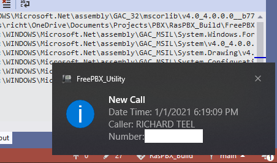

The FreePBX Utility Application was written to provide Caller Id notifications for calls coming from a POTS line to an OBi110 ATA. The code in the RasPBX_Build/Quick Start/www/html/utility folder of the GitHub project may be modified for use with monitoring other ATAs or sources.
When a new call is received by the OBi110 and a record is created in the asteriskcdrdb.cel database table, a notification will
appear in the System Tray
